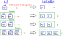
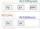
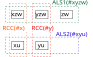

ALS
数独の高度な解法では、ALS（Almost Locked Set）が使われます。
(1)ALS
Locked Setは、同じhouseに属する"n個のセルにn個の候補数字がある"状態で、 どのセルがどの数字かは決まらないが、全体としてLocked状態です。 ALSは同じhouseに属する"n個のセルにn+1個の候補数字"がある"ほぼLocked"状態です。 ALS外で数字が確定しALSから数字が除かれると、ALSはLockedSetになります。 これだけでは解法として成立しませんが、何かと組合せて様々な解析アルゴリズムが作れます。 最小のALSは、"1セル2候補数字"です。

(2)RCC
2つのALSの関係する解析アルゴリズムでは、共通の数字が制限する効果を利用します。
次の図には2つのALSがあり（青と緑の点線枠）、これらが次の条件を満たすとき、その数字をRCC (Restricted Common Candidate:制限された共通候補）と呼びます。
条件:重なりのない2つのALSに共通の数字があり、それらが同じhouse内にある。
(オレンジ点線枠、ALSのhouseとは異なる）。
RCCは同じhouseに属するので、RCCは一方のALSのみ真であり、他方のALSではRCCは偽です。ただし、どちらのALSで真かは決定していません。
ここに何らかの条件が加わり、RCCが一方のALSで真("RCCがこのALSにある"）となると、
他方のALSでは偽("RCCはこのALSにない"）が確定します。
偽となったALSでは"n個のセルにn個の候補数字"となり、 このALSはLockedSetになります。

次の右図は、2つのALS間にRCCが2つあるケースです（doubly linked)。 RCCは一方のALSにのみあります。doublylinkedの場合は2つのRCCが一方のALSに片寄ってあることはなく、 それぞれのALSにひとつづつあります。ただし、どのRCCがどちらのALSにあるかは、決定していません。

また、ALS-RCC-ALSをRCCで結ばれたALSのリンクと呼び、これを連続して繋いでALSの連が作れます。